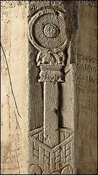
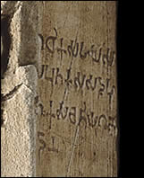

|

Detail from the pillar face
The dharmachakra was set in motion by the Buddha and is a symbol of his First Sermon.
The dharmachakra in this scene rests on top of a column set amidst vines and flowers.

This inscription records that a perfumer named Hamgha and his family, from the city near the stupa, donated the pillar.
|